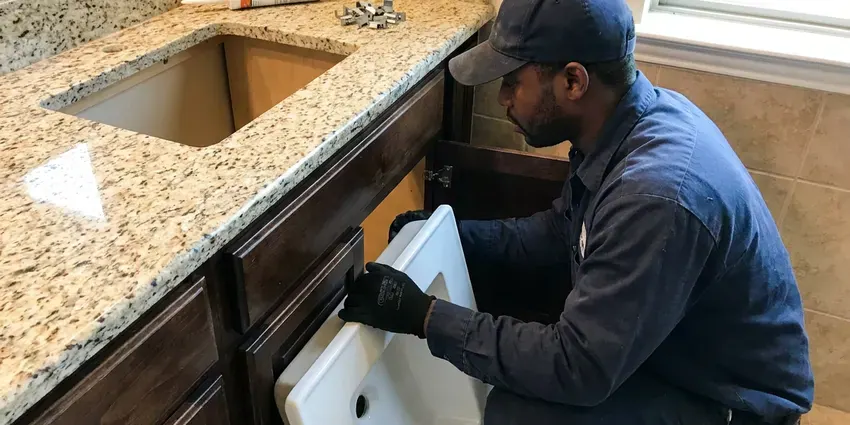

Shower Repair in Silver Spring, MD
A shower that fights you every morning is fixable. BVL Plumbing repairs valves and diverters in Silver Spring, MD and rarely needs to open the wall.
- Diverter and Spout Repair
- Leak Detection Available
- Licensed Plumbers
- Workmanship Guarantee

Get Your Shower Working Right in Silver Spring, MD
Call BVL Plumbing with the brand on your shower trim.
Your Neighborhood Shower Plumber in Silver Spring, MD
BVL Plumbing sees a lot of shower trouble in Silver Spring that starts below the surface. Soils in Maryland range from heavy clay in the central counties to sandy, low-lying ground near the shore, and each affects buried lines differently. Small shifts like that open grout lines and loosen drain joints, and the water that gets through can sit under a pan for months. We check for it.
Our expertise includes:
- Shower Drain Augering and Repair
- Moen, Delta, Kohler and Pfister Cartridges
- Hot and Cold Balance Repair

Additional Bathroom Plumbing Services in Silver Spring, MD
From toilets to showers, our bathroom plumbing team in Silver Spring, MD repairs, installs, and replaces every fixture with clean, code-compliant work.


Customers
Why Choose BVL Plumbing for Shower Repair in Silver Spring, MD?
You hear the price before we start. After we pull the trim and see the valve, we quote a flat number that covers the part and the labor, and that number does not change once the work begins. The number stays put.
- Flat Pricing, You get a flat price before any repair starts.
- Hidden Leak Checks, Moisture testing finds leaks behind tile before they spread.
- Local Know-How, We know how local conditions wear on valves and drains in Silver Spring.
Citywide Coverage
We repair showers in condos, townhomes and houses all over Silver Spring. For condos, we call the building about shutting a riser before we come. It saves a second visit.
Experienced Team
Our team has worked on shower systems from vintage three-handle valves to digital controls. Every valve type has its own weak spots, and knowing them gets us to the fix without trial and error. We do not guess.
Safety-First Approach
Before we leave, every repair gets a leak check. The shower runs on both sides while we check the trim, arm and drain for any moisture. No moisture, then we pack up.
Trusted Certified Silver Spring Plumbing Services Professionals
At BVL Plumbing, we take pride in licensed, certified plumbing services throughout Silver Spring, MD. Those papers on the wall mean something. Every repair, install and maintenance visit follows strict safety and quality rules, and the plumbers doing the work carry recognized industry credentials.
Call Us Now PHCC Plumbing Contractor Recognition
PHCC Plumbing Contractor Recognition Better Business Bureau (BBB) Accreditation
Better Business Bureau (BBB) Accreditation Angi Certified Pro
Angi Certified Pro ISO 9001 Quality Management Certification
ISO 9001 Quality Management CertificationFixing Showers in Silver Spring, MD
Moen and Delta Shower Repair in Silver Spring, MD
Moen 1222 and Delta RP46074 cartridges sit inside a huge share of the showers we open. Moen Posi-Temp showers take the 1222, and Delta Monitor 13 and 14 showers take the RP46074, and both wear out on a fairly regular clock. Both ride on our trucks. Original owners can often get the cartridge free under warranty.

Leaky Shower Valve Repair in Silver Spring
One drip every few seconds adds up to hundreds of gallons a year. Single-handle showers drip from a worn cartridge or O-rings, while old two-handle valves drip from a washer and a pitted seat. The parts are on the truck. Most valves we open take a Moen, Delta, Kohler or Pfister cartridge, which means a same-visit fix.
Emergency Shower Repair in Silver Spring, MD
A shower that will not shut off is an emergency. Close the main valve where the water line enters the house, or the shower's own stops if it has them behind an access panel. Then call us. BVL Plumbing sends a plumber with cartridges on the truck, and we can often get your water back on within the hour.
Emergency Shower Leak Repair in Silver Spring
Water coming through a ceiling below a bathroom needs fast action. Shut the main valve, catch the drip in a bucket and keep people out from under any sagging drywall, since a soaked ceiling can let go without warning. Then call us. We find the source, stop it and dry out what we can that day.
Shower Valve Replacement in Silver Spring
Temperature that swings or a handle that fights you points to the valve. If the valve body is pitted or parts no longer exist, we swap the valve, often through an access opening from the closet side. The new valve will have scald protection. Thermostatic valves are an option if you want exact temperature control.
Shower Handle Leak Repair in Silver Spring
Leaks at the handle or behind the trim plate are easy to miss. Water leaking behind the trim slips into the wall cavity at the valve opening and soaks the drywall while the tile face stays dry. We pull the trim and look. Worn O-rings or a loose bonnet nut are the usual cause.
Showerhead Repair and Replacement in Silver Spring
Showerheads clog from the inside out. Scale builds behind the face plate and in the flow restrictor, so the spray goes uneven, shoots sideways or drops to a trickle even when the valve is wide open. A vinegar soak can work. When it does not, we install a new head with soft rubber nozzles that you can wipe clean with a thumb.

Clogged Shower Drain Clearing in Silver Spring, MD
Hair and soap scum cause nearly every slow shower drain. We pull the strainer and run a hand auger through the trap, and if the clog sits past the trap in the branch line, we switch to a drum machine with a smaller cable. Chemical cleaners rarely reach it. A hair catcher over the strainer keeps the next one from forming.
Shower Repair Near Me in Silver Spring, MD
A nearby plumber knows the valves in nearby homes. We open the same Moen and Delta builder valves in house after house, and we often know the cartridge before pulling the trim. That saves a trip.
Homes around Silver Spring have everything from old three-handle valves to new thermostatic systems. We carry stems and seats for the old ones and cartridges for the new ones, so most repairs do not wait on a parts order. Odd valves take a day.
BVL Plumbing at a Glance
- Licensed and insured plumbers serving Silver Spring, MD
- 24/7 emergency service with same-day scheduling
- Upfront, flat-rate pricing before work begins
- 4.8-star rated by 542+ Maryland customers
Silver Spring Map
Silver Spring Information
- Population
- 81,015
- Area codes
- 301/240/410
- Service area
- Silver Spring and communities within 40 miles
- Nearby
- Wheaton, Bethesda, North Bethesda, Aspen Hill
Older rowhomes and early twentieth century houses across Maryland often still carry galvanized supply pipe and cast iron drains that are near the end of their life. Many older valves were installed before pressure balancing was required, so a repair in Silver Spring, MD is a good time to check for scald protection.
Expert Services
Reach out to BVL Plumbing for reliable plumbing work done by licensed pros in Silver Spring, MD.
Our Specialized Plumbing Services in Silver Spring, MD
At BVL Plumbing, you get every kind of plumbing service from one company across Silver Spring, MD. From leak detection to full system installs, our team works fast and charges fair prices on homes and commercial properties alike. Explore our core services below:


From Drip to Dry in Silver Spring, MD
We find the cause first, then the price, then the fix.
Call for a Time
Call (443) 719-1650 or use our form and tell us what the shower is doing. Send a photo of the handle if you can.
Find the Cause
A licensed plumber checks the valve, head and drain at your Silver Spring home and gives you a flat price.
Repair and Test
Once you approve, we swap the worn parts and run the shower hot and cold.
Frequently Asked Questions About Shower Repair in Silver Spring
Most shower repairs, like a cartridge or diverter, cost $150 to $375. When the wall has to be opened for a valve swap, expect $450 to $1,200 based on the valve and the access. Shower pans run higher.
Every major brand, plus a lot of older ones. Moen, Delta, Kohler, Pfister, American Standard and Grohe make up most of what we see, and we carry cartridges for the common models. Older brands may need a part ordered.
One to three hours covers most. Cartridges and clogs are about an hour, and a valve that has to be reached through the wall can take most of a morning. We tell you up front.
Swapping the head, yes. Leave cartridges and tile leaks to a plumber.
Check the other side of the wall for stains or soft drywall. Loose tile, a musty smell or spots on the ceiling below are clues we confirm with a meter.
Many do. Moen and Delta cover cartridges for life for original owners, and we can help you check.
Mineral scale in the head or the cartridge is the usual cause. A sticking balance valve or a partly closed main can also choke the flow. We test each.
Worn cartridge or seals, almost always. Hard water speeds that wear, which is why drips are so common, and a new cartridge with fresh silicone grease usually stops it for years.
Hear From Customers Who Hired Our Plumbing Experts

Diane F.
My kitchen faucet had dripped for months and I finally got tired of hearing it at night. BVL Plumbing came out the next morning, replaced the cartridge and the O rings, and tightened a loose base that was letting water under the sink.
Faucet Repair · Aspen Hill, MD
Lisa C.
Water was pouring out from under the washing machine on a holiday weekend. BVL Plumbing talked me through closing the valves over the phone and had a plumber at the house within ninety minutes. It was a burst fill hose.
Emergency Plumbing · Silver Spring, MD
Brian W.
I smelled gas behind the dryer and called right away. The plumber found a corroded flex connector, replaced it, and pressure tested the whole line before turning the gas back on. He let me watch the gauge hold steady for fifteen minutes.
Gas Line Repair · Wheaton, MD
Daniel K.
A pipe burst in the garage ceiling at 11 at night. Someone answered on the second ring, and the plumber was in my driveway about fifty minutes later. He shut off the main, cut out the split section, and had water back on before 2 am.
Emergency Plumbing · Rockville, MD
Laura S.
Our 40 gallon tank started leaking from the bottom after thirteen years. The tech hauled the old one out, set a new unit with a fresh expansion tank, and had hot water running in about four hours. He took the old tank with him too.
Water Heater Replacement · Silver Spring, MD
Robert G.
The camera showed a full break in our clay sewer line near the street. BVL Plumbing replaced it with a trenchless pipe burst, so the only digging was two small pits in the yard. They let us watch the footage before and after.
Sewer Line Replacement · Wheaton, MD